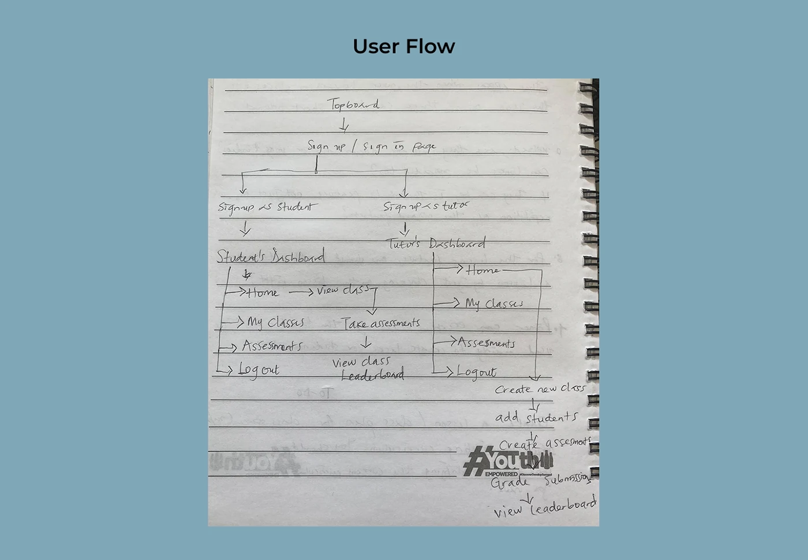
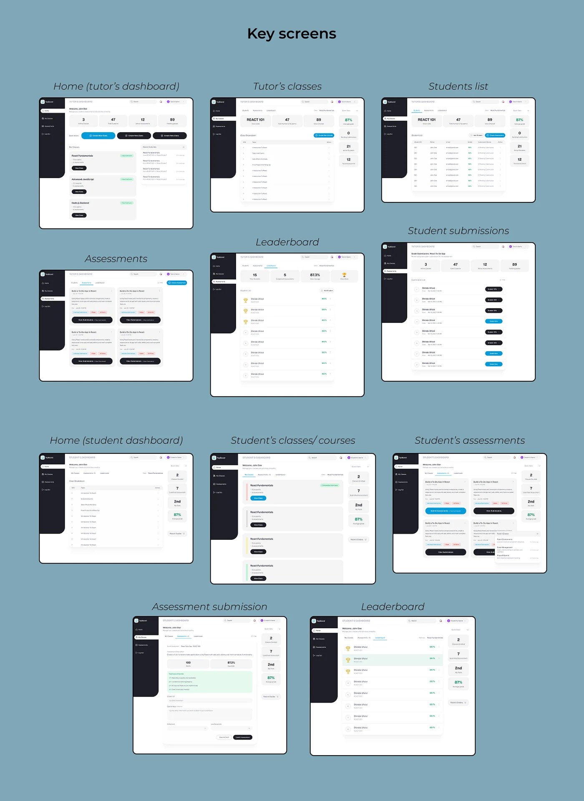
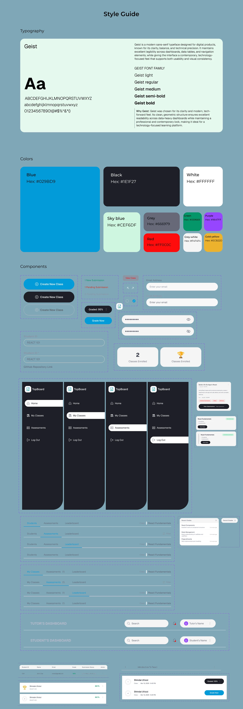
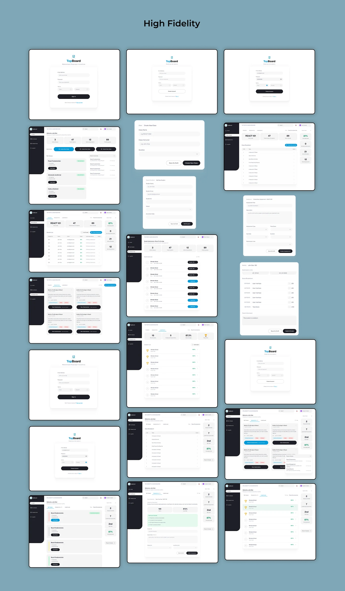

More work · Product design · Dashboards
Topboard
An educational platform dashboard
RoleProduct Designer
FocusDual dashboards for instructors and students, with gamification as a motivator

The problem
Keeping up with school tasks is hard, for students and instructors.
Research process
For an effective design, I adopted a few methods of research like surveys and interviews.
This allowed me to understand user behaviors deeply while also validating patterns across a wider audience. The target audience for this product are Instructors/ Teachers and students as this will help improve their learning, teaching experiences and time management effectively.
Design process
Empathize to test
User flow
Two ways in, one platform

User personas
An instructor and a student
Dr. Maya Thompson
Instructor / Tech Educator, age 36. Tech experience: Advanced. Teaches: Frontend Development & Data Visualization.
Goals
- Easily create and manage multiple classes.
- Quickly upload and grade assessments.
- Track student performance without switching tools.
- Keep students engaged and motivated throughout the course.
Pain points
- Too much time spent organizing classes and grading manually.
- Difficulty monitoring individual student progress.
- Existing dashboards feel cluttered and non-intuitive.
- Students often miss deadlines because information is scattered.
Needs
- A clean dashboard with clear task breakdowns.
- Tools to create assessments fast.
- Visual analytics of student performance.
- A system that encourages student participation (e.g. leaderboard).
Daniel Adebayo
Aspiring software engineer, age 21. Tech experience: Intermediate. Learning: Python, Web Development, Databases.
Goals
- Learn at a steady pace and track his progress
- Easily find classes, lessons, and assignments
- Submit assessments without stress or confusion.
- Stay motivated by seeing improvements and competition.
Pain points
- Gets overwhelmed when deadlines aren't clear.
- Finds it difficult to track progress across multiple courses.
- Existing platforms lack motivation or recognition.
- Assessment pages often feel disorganized.
Needs
- A dashboard that shows courses, deadlines, and progress in one view.
- Simple navigation to find assessments and submit work.
- Visual indicators of performance (progress bars, badges, rankings).
- A leaderboard or motivational system to encourage consistency.
Key screens
Tutor and student dashboards

Style guide
Why Geist?
Geist was chosen for its clarity and modern, tech-forward feel. Its clean, geometric structure ensures excellent readability across data-heavy dashboards while maintaining a professional and contemporary look, making it ideal for a technology-focused learning platform.

High fidelity
The full set

Conclusion
This project taught me the importance of balancing utility with motivation.
A dashboard isn't just a control panel, it's where engagement either begins or ends. By designing dual dashboards tailored to instructors and students, with gamification as a motivator, this platform creates a smoother, more rewarding educational experience.
Back to the rest
More work →Have a product that needs figuring out?
Let's talk.
© Lulu 2026 · Designed in Jos, Nigeria.